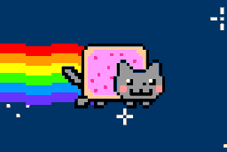

Nyan Cat GIF

Pulled from Gifdb.
Description
This image is in Graphics Interchange Format (.GIF) format. It is one of the Original GIFs people think of from the 2010s internet. This animated image is of nyan cat, aka a pop tart cat, with it's rainbows shooting through space as it enjoys it's journey through the stars. The cat itself is a simple pixel art that has been shared numerous times and often goes with it's theme which you can find anywhere on the internet.